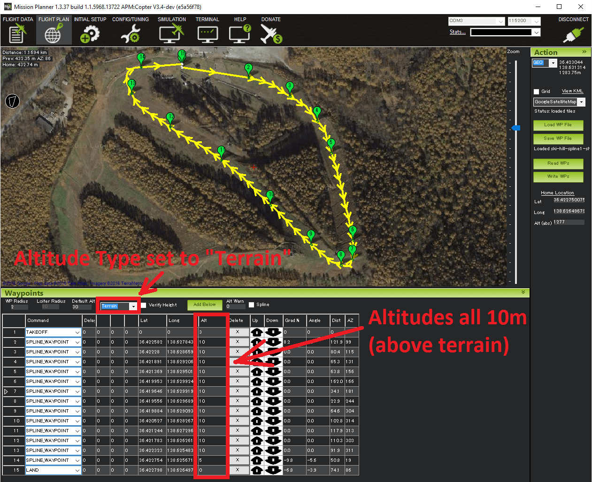
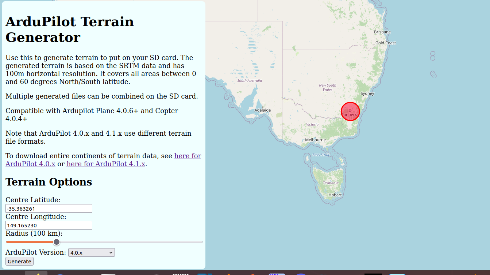

地形跟随（自动、引导等）¶
Copter几乎在所有 AUTO自动、 Guided引导、 RTL和 Land模式下都支持“地形跟随”。该功能允许车辆使用 面朝下的激光雷达或声纳，或根据地面站使用地图服务（如谷歌地图）提供的 SRTM 数据（也称为地形高度数据），或存储在自动驾驶仪SD卡的“terrain”子目录中，爬升或下降以在地形上方保持指定距离。有关如何使用和存储SRTM数据的详细信息，请参阅 平面地形下页。
有关海拔定义，请参阅ArduPilot中的了解海拔。
设置使用地形数据的任务¶
如果使用地面军事系统提供的地形数据，则将TERRAIN_ENABLE参数设置为1
使用飞行计划屏幕上最新版本的飞行计划器（或其他支持地形跟随的地面军事系统），将高度类型设置为“地形”。一旦设置，包括“Alt”字段的所有任务命令都将被解释为高于地形的高度。
将任务上传到车辆上，并像在AUTO（自动）模式下一样执行任务

{kind=link}
警告
不要设置EK2_ALT_SOURCE 或 EK3_ALT_SOURCE 参数。这些参数应保留在“0”（气压计）。
不要设置EK2_RNG_USE_HGT 或 EK3_RNG_USE_HGT 参数。这些参数应保留在“-1”处。
地形数据源¶
地面站通常负责提供通过MAVLink发送给飞机的原始地形数据。目前，只有Mission Planner和MAVProxy支持地形跟随下载支持所需的TERRAIN_DATA和TERRAIN_REQUEST MAVLink消息。如果您使用不同的地面站，为了下载地形数据，您需要使用这两个地面站中的一个进行连接，以便ArduPilot在地面或飞行中将地形数据加载到您的板上。加载后，它将永久保存在microSD卡上。
MissionPlanner和MAVProxy都支持用于地形数据的全球SRTM数据库。MAVProxy和Mission Planner使用的ArduPilot SRTM服务器具有100米的网格间距。除非地面控制站使用间距更近的服务器，否则将 TERRAIN_SPACING参数设置为低于100m不会提供更好的分辨率，只会占用SD卡上更多的空间。
地形数据会在您保存或连接到这些地面站的加载任务时下载，或者，如果飞行，如果自动驾驶仪飞入尚未下载的区域，则自动驾驶仪会请求数据。假设地面站可以提供。通常地面站需要互联网连接。
或者，您可以使用此web实用程序下载任何预期飞行区域的一组地形数据块。
它将为地理位置周围的指定半径创建瓷砖。然后您可以下载它们，解压缩并写入SD卡的APM/TERRAIN文件夹。
您还可以从这里下载整个大陆或单个片的.zip文件。请注意，ArduPilot 4.0.x和4.1.x具有不同的波浪形符号。对于ArduPilot 4.0.x使用“continents”/”tiles”文件夹，或者对于ArduPelot 4.1.x使用“continentsapm41”/“tilesapm41”文件夹。
警告
在Plane 4.0.6、Copter 4.0.4和Rover 4.1中修复了下载的地形数据文件中的一个长期存在的错误，该错误偶尔会导致地形数据丢失，尽管据称是下载的。当连接到兼容的地面军事系统时，它将自动重新下载。但是，如果您依赖某个区域的SD地形数据，并且在飞越地面军事系统时不打算连接到该系统，或者该系统不是任务的一部分，则应使用上述实用程序或从链接的瓦片数据存储库下载该区域数据，并将其放在terrain目录中的SD卡上。
警告
ArduPilot 4.0.x和4.1.x使用不同的地形瓷砖。从4.0.x升级到4.1.x时，SD卡上的所有磁贴都需要重新下载。当您的地面军事系统连接到已加载任务和/或归属地所覆盖区域的互联网时，这将自动发生。否则，您可以将TERRAIN_MARGIN设置为50以继续使用旧的tileset。
RTL和Land期间使用地形高度¶
将 TERRAIN_FOLLOW 参数设置为1，可在 RTL和 Land 飞行模式下使用地形数据。如果设置了 RTL_ALT ，车辆将把它解释为高于地形的高度，这意味着它通常会在回家的路上翻越山丘。类似地，当陆地在地形上方10米（而不是在家上方10米）时，它将减速到 LAND_SPEED （通常为50厘米/秒）。目前不建议设置此参数，因为下面提到的边缘情况涉及车辆在 RTL 期间无法检索地形数据的不太可能的情况。在这些情况下， RTL_ALT 将被解释为高于原点的ALT。
无地形数据情况下的故障保护¶
如果车辆正在执行需要地形数据的任务命令，但在两秒钟内无法检索地形数据（通常是因为测距仪出现故障、超出范围或地面站无法提供地形数据），则车辆将切换到RTL模式（如果正在飞行）或解除武装（如果已着陆）。
请注意，由于在这种情况下，它无法立即访问地形数据，因此无论 TERRAIN_FOLLOW 是否设置为“1”，它都将执行正常RTL，将 RTL_ALT 解释为高于原点的高度。
用户报告的一个常见问题是，当车辆在地面上时，用户切换到AUTO模式以启动任务时，车辆会立即解除武装。原因是测距仪报告的高度（可从MP的飞行数据屏幕的状态选项卡的sonar_range字段进行检查）短于 RNGFND1_MIN_CM （例如RNGFND1_MIN_CM）参数，这意味着测距仪在地面上报告“不健康”。解决方案是减小RNGFNDx_MIN_CM值（可能为“5”）。
地形间距和精度¶
TERRAIN_SPACING 参数控制从地面站请求地形高度时使用的网格大小（如果使用激光雷达，则不使用该参数）。默认情况下，这是100米，但减少到30米可能会提供更好的精度，代价是地面军事系统和自动驾驶仪之间的遥测通信量增加，SD卡上的文件存储空间增加9倍，但前提是地面站使用具有该分辨率的服务器。MavProxy和Mission Planner目前没有。此外，如果车辆移动非常快，自动驾驶仪可能无法足够快地检索和缓存数据，从而无法实际使用提高的分辨率。因此，建议您使用100米的 TERRAIN_SPACING。
如果地面站没有飞机要求分辨率的可用地形数据，则地面站将根据需要进行插值，以提供要求的网格大小。
地形精度¶
SRTM数据库的准确性在地球表面各不相同。典型的精度约为10米，但一位开发商注意到，在滑雪山的顶峰处，精度为35米。这使得地形跟随适合在60米或更高高度飞行的飞机。对于在较低海拔高度非常精确的地形跟踪，建议使用 向下的激光雷达或声纳。
警告¶
在规划包含高于地形不同高度的命令的任务时，请记住车辆高于地形的高度将在各航路点之间逐渐变化。也就是说，当它开始驶向下一个航路点时，它不会立即爬升或下降到高于地形的新目标高度。
在实践中，最好将初始起飞指令的高度设置得足够高，以清除障碍物。
{kind=link}